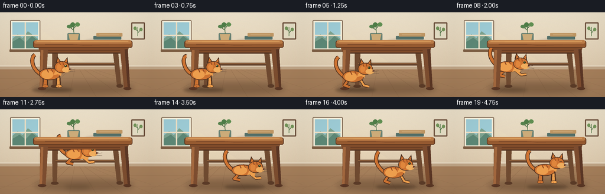
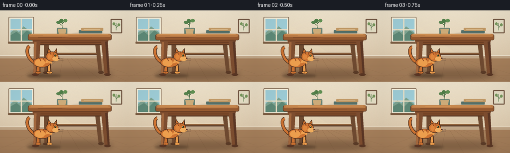

CODING AGENTS AS PIXEL WORLD MODELS
traex/GPT-5.6-Sol · dynamic_spatial_relationship_0008
点击播放 · 原生 RGB 像素
逐轮保存的候选
回放视频、检查图与代码变化。
每份候选均可单独播放。实际图片检查记录在下方工具轨迹中。
候选 01播放与检查图
点击播放 · 原生 RGB 像素


展开代码变化
--- 上一保存版本
+++ 本次保存版本
@@ -0,0 +1,266 @@
+from pathlib import Path
+import math
+import numpy as np
+from PIL import Image, ImageDraw, ImageFilter
+import artifact_io
+
+W,H,N = 256,144,20
+SS=3
+rng=np.random.default_rng(8)
+
+def sc(v): return int(round(v*SS))
+def pts(seq): return [(sc(x),sc(y)) for x,y in seq]
+def box(b): return tuple(sc(v) for v in b)
+
+def rounded(draw,b,r,fill,outline=None,width=1):
+ draw.rounded_rectangle(box(b),radius=sc(r),fill=fill,outline=outline,width=sc(width))
+
+def line(draw, seq, fill, width=1, joint='curve'):
+ draw.line(pts(seq),fill=fill,width=sc(width),joint=joint)
+
+def ellipse(draw,b,fill,outline=None,width=1):
+ draw.ellipse(box(b),fill=fill,outline=outline,width=sc(width))
+
+def polygon(draw,seq,fill): draw.polygon(pts(seq),fill=fill)
+
+def bezier(p0,p1,p2,p3,n=24):
+ out=[]
+ for t in np.linspace(0,1,n):
+ u=1-t
+ out.append((u**3*p0[0]+3*u*u*t*p1[0]+3*u*t*t*p2[0]+t**3*p3[0],
+ u**3*p0[1]+3*u*u*t*p1[1]+3*u*t*t*p2[1]+t**3*p3[1]))
+ return out
+
+def make_background():
+ # Warm late-afternoon interior with a softly textured plaster wall.
+ yy=np.linspace(0,1,H*SS)[:,None,None]
+ top=np.array([239,228,205],float)[None,None,:]
+ bottom=np.array([213,190,159],float)[None,None,:]
+ arr=np.broadcast_to(top*(1-yy)+bottom*yy,(H*SS,W*SS,3)).copy()
+ noise=rng.normal(0,1.5,(H*SS,W*SS,1))
+ arr=np.clip(arr+noise,0,255).astype(np.uint8)
+ im=Image.fromarray(arr,'RGB')
+ d=ImageDraw.Draw(im)
+ # framed sunlit window
+ rounded(d,(17,13,68,65),2,(246,241,221),(126,101,78),1.3)
+ d.rectangle(box((21,17,64,61)),fill=(151,196,202))
+ # sky gradient impression and distant silhouettes
+ d.rectangle(box((21,17,64,38)),fill=(159,206,216))
+ polygon(d,[(21,45),(30,37),(38,44),(47,32),(64,45),(64,61),(21,61)],(126,164,145))
+ polygon(d,[(21,50),(33,43),(43,51),(54,40),(64,48),(64,61),(21,61)],(94,137,119))
+ line(d,[(42.5,17),(42.5,61)],(239,226,199),2.2)
+ line(d,[(21,39),(64,39)],(239,226,199),2.2)
+ rounded(d,(16,63,69,67),1,(126,95,68))
+ # framed botanical print at right
+ rounded(d,(222,17,245,46),1.3,(107,78,58))
+ d.rectangle(box((224,19,243,44)),fill=(231,224,199))
+ line(d,[(233,40),(233,25)],(95,127,82),1)
+ line(d,[(233,32),(228,27)],(95,127,82),1)
+ line(d,[(233,35),(238,29)],(95,127,82),1)
+ ellipse(d,(226,24,231,30),(117,151,91)); ellipse(d,(236,26,241,32),(117,151,91))
+ # sunlight wedge on wall
+ light=Image.new('RGBA',im.size,(0,0,0,0)); ld=ImageDraw.Draw(light)
+ polygon(ld,[(69,29),(153,91),(116,101),(69,59)],(255,242,191,24))
+ im=Image.alpha_composite(im.convert('RGBA'),light).convert('RGB'); d=ImageDraw.Draw(im)
+ # baseboard, then floor
+ d.rectangle(box((0,91,256,97)),fill=(193,166,135))
+ line(d,[(0,91),(256,91)],(245,235,216),1.2)
+ d.rectangle(box((0,97,256,144)),fill=(170,131,94))
+ # floor gradient overlay
+ floor=Image.new('RGBA',im.size,(0,0,0,0)); fd=ImageDraw.Draw(floor)
+ for y in range(97*SS,144*SS):
+ t=(y/SS-97)/47
+ fd.line([(0,y),(W*SS,y)],fill=(79,50,30,int(8+20*t)),width=1)
+ # floorboard perspective and seams
+ for x0 in [-25,24,71,117,163,209,258,307]:
+ line(fd,[(128+(x0-128)*0.18,97),(x0,144)],(92,62,40,55),0.65)
+ for y in [112,131]: line(fd,[(0,y),(256,y)],(102,69,42,45),0.65)
+ im=Image.alpha_composite(im.convert('RGBA'),floor)
+ return im
+
+BG=make_background()
+
+def soft_shadow(im,b,alpha=75,blur=4):
+ sh=Image.new('RGBA',im.size,(0,0,0,0)); sd=ImageDraw.Draw(sh)
+ sd.ellipse(box(b),fill=(52,32,19,alpha))
+ sh=sh.filter(ImageFilter.GaussianBlur(sc(blur)))
+ im.alpha_composite(sh)
+
+def draw_table_rear(im):
+ d=ImageDraw.Draw(im)
+ # broad ambient shadow under the table
+ soft_shadow(im,(58,119,226,139),70,5)
+ d=ImageDraw.Draw(im)
+ # rear legs are lighter/softer and sit deep in the scene
+ polygon(d,[(88,59),(98,59),(96,126),(89,126)],(112,75,49))
+ polygon(d,[(190,59),(199,59),(205,125),(198,125)],(112,75,49))
+ line(d,[(94,88),(194,88)],(105,70,46),5)
+ line(d,[(94,86.5),(194,86.5)],(167,116,72),1)
+ ellipse(d,(86,123,99,128),(92,60,40))
+ ellipse(d,(197,122,208,128),(92,60,40))
+ # dark underside cavity makes "under the table" legible
+ polygon(d,[(67,57),(216,57),(205,70),(78,70)],(83,52,34))
+
+def draw_table_front(im, full=True):
+ d=ImageDraw.Draw(im)
+ # front apron and rich wood tabletop
+ if full:
+ polygon(d,[(63,56),(219,56),(215,68),(68,68)],(127,75,42))
+ line(d,[(69,65),(214,65)],(91,52,32),1)
+ # front legs with tapered silhouettes
+ polygon(d,[(68,62),(81,62),(77,130),(67,130)],(126,78,48))
+ polygon(d,[(203,62),(216,61),(220,130),(210,130)],(126,78,48))
+ # golden edge lights and inner shadows
+ polygon(d,[(69,64),(73,64),(71,127),(67,130)],(164,105,63))
+ polygon(d,[(211,63),(216,62),(220,130),(216,127)],(92,55,37))
+ ellipse(d,(64,127,78,132),(91,55,37)); ellipse(d,(209,127,222,132),(91,55,37))
+ if full:
+ # thick top, gently imperfect corners
+ rounded(d,(56,48,224,60),3.2,(151,91,49),(88,51,31),1)
+ rounded(d,(58,47,222,53),2.5,(190,126,72))
+ line(d,[(62,49),(217,49)],(226,166,98),1)
+ # grain
+ line(d,[(76,54),(124,54),(141,56),(184,55)],(113,65,39),0.7)
+ line(d,[(86,50),(137,50)],(211,145,82),0.55)
+
+def draw_tabletop_objects(im):
+ d=ImageDraw.Draw(im)
+ # a quiet stack of books and small ceramic planter, clarifying the horizontal tabletop
+ soft_shadow(im,(143,44,209,53),30,1.5)
+ d=ImageDraw.Draw(im)
+ rounded(d,(158,40,205,46),1,(84,112,105))
+ rounded(d,(163,35,207,41),1,(193,152,100))
+ line(d,[(168,38),(201,38)],(234,208,164),0.7)
+ rounded(d,(114,35,135,48),2,(105,130,116))
+ polygon(d,[(116,37),(133,37),(131,47),(118,47)],(205,172,122))
+ # stems/leaves
+ line(d,[(125,36),(124,22)],(75,111,70),1.1)
+ line(d,[(124,30),(118,25)],(75,111,70),0.9)
+ line(d,[(124,28),(130,21)],(75,111,70),0.9)
+ ellipse(d,(113,21,122,27),(88,132,79)); ellipse(d,(127,17,135,24),(97,144,83)); ellipse(d,(119,17,127,25),(80,126,72))
+
+def cat_shadow(im,x,base,air):
+ # shadow shrinks and softens at jump apex
+ sh=Image.new('RGBA',im.size,(0,0,0,0)); d=ImageDraw.Draw(sh)
+ w=34-12*air
+ d.ellipse(box((x-w,base+0.5,x+w,base+7)),fill=(46,29,19,int(95-35*air)))
+ sh=sh.filter(ImageFilter.GaussianBlur(sc(2.2+air*1.8)))
+ im.alpha_composite(sh)
+
+def draw_cat(im,x,base,pose,phase=0,air=0):
+ # Side-view orange tabby. All shapes share an ink-colored rim for clean animation readability.
+ d=ImageDraw.Draw(im)
+ outline=(78,48,31,255); fur=(207,116,50,255); light=(239,160,78,255); dark=(147,73,35,255)
+ crouch = 1 if pose=='crouch' else (0.55 if pose=='land' else 0)
+ body_y = base-21+4*crouch
+ head_y = base-36+3*crouch
+ # tail, animated with a clear expressive curl
+ sway=2.5*math.sin(phase)
+ tail=bezier((x-18,body_y-1),(x-35,body_y-11+sway),(x-37,body_y-30-sway),(x-29,body_y-35+sway),28)
+ line(d,tail,outline,7)
+ line(d,tail,fur,4.5)
+ # airborne pose uses a longer, more horizontal silhouette
+ if pose=='air':
+ body_y=base-21
+ # tucked back leg and reaching forelegs
+ line(d,[(x-10,body_y+5),(x-18,body_y+13),(x-8,body_y+15)],outline,6)
+ line(d,[(x-10,body_y+5),(x-18,body_y+13),(x-8,body_y+15)],fur,3.6)
+ line(d,[(x+8,body_y+3),(x+19,body_y+12),(x+28,body_y+11)],outline,5.5)
+ line(d,[(x+8,body_y+3),(x+19,body_y+12),(x+28,body_y+11)],light,3.2)
+ ellipse(d,(x-22,body_y-11,x+15,body_y+8),fur,outline,1.1)
+ ellipse(d,(x-18,body_y-9,x+4,body_y+6),light)
+ hx=x+16; hy=body_y-8
+ else:
+ # grounded paws and legs, shortened during anticipation/landing
+ legtop=body_y+3
+ if crouch:
+ line(d,[(x-12,legtop),(x-19,base-4),(x-10,base-1)],outline,6)
+ line(d,[(x-12,legtop),(x-19,base-4),(x-10,base-1)],fur,3.7)
+ line(d,[(x+8,legtop),(x+14,base-4),(x+23,base-2)],outline,5.5)
+ line(d,[(x+8,legtop),(x+14,base-4),(x+23,base-2)],light,3.2)
+ else:
+ polygon(d,[(x-14,body_y+3),(x-7,body_y+3),(x-7,base-2),(x-16,base-2)],outline)
+ polygon(d,[(x-13,body_y+3),(x-9,body_y+3),(x-9,base-3),(x-15,base-3)],fur)
+ polygon(d,[(x+7,body_y+2),(x+14,body_y+2),(x+15,base-2),(x+6,base-2)],outline)
+ polygon(d,[(x+9,body_y+2),(x+12,body_y+2),(x+13,base-3),(x+8,base-3)],light)
+ ellipse(d,(x-17,base-5,x-6,base),fur,outline,0.8); ellipse(d,(x+6,base-5,x+17,base),light,outline,0.8)
+ ellipse(d,(x-22,body_y-12,x+14,body_y+8),fur,outline,1.1)
+ ellipse(d,(x-18,body_y-9,x+2,body_y+6),light)
+ hx=x+14; hy=head_y
+ # neck ruff behind head
+ polygon(d,[(hx-8,hy+7),(hx-12,hy+15),(hx-4,hy+13),(hx+1,hy+16),(hx+3,hy+7)],light)
+ # ears then head
+ polygon(d,[(hx-8,hy-6),(hx-5,hy-17),(hx+1,hy-8)],outline)
+ polygon(d,[(hx+6,hy-8),(hx+12,hy-16),(hx+13,hy-4)],outline)
+ polygon(d,[(hx-6,hy-7),(hx-4,hy-14),(hx,hy-7)],fur)
+ polygon(d,[(hx+7,hy-8),(hx+11,hy-13),(hx+11,hy-5)],fur)
+ ellipse(d,(hx-10,hy-9,hx+15,hy+11),fur,outline,1.1)
+ # cream muzzle and bright cheek
+ ellipse(d,(hx+3,hy+1,hx+17,hy+10),(241,174,94))
+ ellipse(d,(hx-6,hy-4,hx+2,hy+7),(225,135,61))
+ # tabby stripes
+ line(d,[(x-9,body_y-11),(x-6,body_y-5)],dark,1.6)
+ line(d,[(x-2,body_y-12),(x+1,body_y-6)],dark,1.5)
+ line(d,[(hx-2,hy-8),(hx,hy-3)],dark,1.4)
+ line(d,[(hx+4,hy-8),(hx+5,hy-3)],dark,1.3)
+ # eye can blink in a resting frame
+ blink = pose=='idle' and (phase%(2*math.pi))>5.45
+ if blink:
+ line(d,[(hx+7,hy-1),(hx+11,hy-1)],(50,42,27),1)
+ else:
+ ellipse(d,(hx+7,hy-3,hx+11,hy+1),(53,58,31))
+ ellipse(d,(hx+8,hy-2.5,hx+9,hy-1.4),(246,227,151))
+ polygon(d,[(hx+15,hy+3),(hx+19,hy+4),(hx+15,hy+6)],(92,49,42))
+ # whiskers
+ line(d,[(hx+14,hy+6),(hx+25,hy+4)],(92,71,56),0.55)
+ line(d,[(hx+14,hy+8),(hx+25,hy+9)],(92,71,56),0.55)
+ # toe accents
+ if pose!='air':
+ line(d,[(x-12,base-3),(x-12,base-1)],dark,0.6)
+ line(d,[(x+11,base-3),(x+11,base-1)],dark,0.6)
+
+
+def frame_at(i):
+ im=BG.copy().convert('RGBA')
+ # Background table structure is always behind the actor.
+ draw_table_rear(im)
+ draw_tabletop_objects(im)
+ phase=i*0.66
+ if i<=4:
+ x=88+0.5*math.sin(i*.8); base=128; pose='idle'; air=0
+ elif i<=6:
+ x=89+(i-4)*0.8; base=128; pose='crouch'; air=0
+ elif i<=14:
+ p=(i-7)/7
+ e=p*p*(3-2*p)
+ x=91+(158-91)*e
+ base=128-29*math.sin(math.pi*p)-2*p
+ pose='air'; air=math.sin(math.pi*p)
+ elif i==15:
+ x=158; base=126; pose='land'; air=0
+ elif i==16:
+ x=158; base=126; pose='crouch'; air=0
+ else:
+ x=158+0.35*math.sin(i); base=126; pose='idle'; air=0
+ cat_shadow(im,x,128,air)
+ # In opening frames, full table is drawn first so the cat visibly stands IN FRONT.
+ # During and after entry, cat is between rear/front table layers: clearly BELOW/UNDER it.
+ if i<=6:
+ draw_table_front(im,True)
+ draw_cat(im,x,base,pose,phase,air)
+ else:
+ draw_cat(im,x,base,pose,phase,air)
+ draw_table_front(im,True)
+ # mild cinematic vignette and stable paper grain
+ arr=np.asarray(im.convert('RGB')).astype(np.float32)
+ yy,xx=np.mgrid[0:H*SS,0:W*SS]
+ cx,cy=W*SS/2,H*SS/2
+ vign=np.clip(((xx-cx)/(W*SS*.72))**2+((yy-cy)/(H*SS*.85))**2,0,1)[...,None]
+ arr*=1-0.075*vign
+ im=Image.fromarray(np.clip(arr,0,255).astype(np.uint8),'RGB')
+ im=im.resize((W,H),Image.Resampling.LANCZOS)
+ return np.asarray(im,dtype=np.uint8)
+
+frames=np.stack([frame_at(i) for i in range(N)],axis=0)
+assert frames.shape==(20,144,256,3) and frames.dtype==np.uint8
+artifact_io.save(frames,Path(__file__).resolve().parent)
可观测工具轨迹
实际执行的命令与返回图片。
命令 1exit 0
/bin/bash -lc "ls -la && printf '\\n--- prompt.txt ---\\n' && cat prompt.txt"
命令 2exit 0
/bin/bash -lc "printf '%s\\n' '--- GENERATION_RULES.md ---' && cat GENERATION_RULES.md && printf '%s\\n' '--- task_spec.json ---' && cat task_spec.json"
命令 3exit 0
/bin/bash -lc "sed -n '1,240p' artifact_io.py"
命令 4exit 0
/bin/bash -lc "cat > generate.py <<'PY'
from pathlib import Path
import math
import numpy as np
from PIL import Image, ImageDraw, ImageFilter
import artifact_io
W,H,N = 256,144,20
SS=3
rng=np.random.default_rng(8)
def sc(v): return int(round(v*SS))
def pts(seq): return [(sc(x),sc(y)) for x,y in seq]
def box(b): return tuple(sc(v) for v in b)
def rounded(draw,b,r,fill,outline=None,width=1):
draw.rounded_rectangle(box(b),radius=sc(r),fill=fill,outline=outline,width=sc(width))
def line(draw, seq, fill, width=1, joint='curve'):
draw.line(pts(seq),fill=fill,width=sc(width),joint=joint)
def ellipse(draw,b,fill,outline=None,width=1):
draw.ellipse(box(b),fill=fill,outline=outline,width=sc(width))
def polygon(draw,seq,fill): draw.polygon(pts(seq),fill=fill)
def bezier(p0,p1,p2,p3,n=24):
out=[]
for t in np.linspace(0,1,n):
u=1-t
out.append((u**3*p0[0]+3*u*u*t*p1[0]+3*u*t*t*p2[0]+t**3*p3[0],
u**3*p0[1]+3*u*u*t*p1[1]+3*u*t*t*p2[1]+t**3*p3[1]))
return out
def make_background():
# Warm late-afternoon interior with a softly textured plaster wall.
yy=np.linspace(0,1,H*SS)[:,None,None]
top=np.array([239,228,205],float)[None,None,:]
bottom=np.array([213,190,159],float)[None,None,:]
arr=np.broadcast_to(top*(1-yy)+bottom*yy,(H*SS,W*SS,3)).copy()
noise=rng.normal(0,1.5,(H*SS,W*SS,1))
arr=np.clip(arr+noise,0,255).astype(np.uint8)
im=Image.fromarray(arr,'RGB')
d=ImageDraw.Draw(im)
# framed sunlit window
rounded(d,(17,13,68,65),2,(246,241,221),(126,101,78),1.3)
d.rectangle(box((21,17,64,61)),fill=(151,196,202))
# sky gradient impression and distant silhouettes
d.rectangle(box((21,17,64,38)),fill=(159,206,216))
polygon(d,[(21,45),(30,37),(38,44),(47,32),(64,45),(64,61),(21,61)],(126,164,145))
polygon(d,[(21,50),(33,43),(43,51),(54,40),(64,48),(64,61),(21,61)],(94,137,119))
line(d,[(42.5,17),(42.5,61)],(239,226,199),2.2)
line(d,[(21,39),(64,39)],(239,226,199),2.2)
rounded(d,(16,63,69,67),1,(126,95,68))
# framed botanical print at right
rounded(d,(222,17,245,46),1.3,(107,78,58))
d.rectangle(box((224,19,243,44)),fill=(231,224,199))
line(d,[(233,40),(233,25)],(95,127,82),1)
line(d,[(233,32),(228,27)],(95,127,82),1)
line(d,[(233,35),(238,29)],(95,127,82),1)
ellipse(d,(226,24,231,30),(117,151,91)); ellipse(d,(236,26,241,32),(117,151,91))
# sunlight wedge on wall
light=Image.new('RGBA',im.size,(0,0,0,0)); ld=ImageDraw.Draw(light)
polygon(ld,[(69,29),(153,91),(116,101),(69,59)],(255,242,191,24))
im=Image.alpha_composite(im.convert('RGBA'),light).convert('RGB'); d=ImageDraw.Draw(im)
# baseboard, then floor
d.rectangle(box((0,91,256,97)),fill=(193,166,135))
line(d,[(0,91),(256,91)],(245,235,216),1.2)
d.rectangle(box((0,97,256,144)),fill=(170,131,94))
# floor gradient overlay
floor=Image.new('RGBA',im.size,(0,0,0,0)); fd=ImageDraw.Draw(floor)
for y in range(97*SS,144*SS):
t=(y/SS-97)/47
fd.line([(0,y),(W*SS,y)],fill=(79,50,30,int(8+20*t)),width=1)
# floorboard perspective and seams
for x0 in [-25,24,71,117,163,209,258,307]:
line(fd,[(128+(x0-128)*0.18,97),(x0,144)],(92,62,40,55),0.65)
for y in [112,131]: line(fd,[(0,y),(256,y)],(102,69,42,45),0.65)
im=Image.alpha_composite(im.convert('RGBA'),floor)
return im
BG=make_background()
def soft_shadow(im,b,alpha=75,blur=4):
sh=Image.new('RGBA',im.size,(0,0,0,0)); sd=ImageDraw.Draw(sh)
sd.ellipse(box(b),fill=(52,32,19,alpha))
sh=sh.filter(ImageFilter.GaussianBlur(sc(blur)))
im.alpha_composite(sh)
def draw_table_rear(im):
d=ImageDraw.Draw(im)
# broad ambient shadow under the table
soft_shadow(im,(58,119,226,139),70,5)
d=ImageDraw.Draw(im)
# rear legs are lighter/softer and sit deep in the scene
polygon(d,[(88,59),(98,59),(96,126),(89,126)],(112,75,49))
polygon(d,[(190,59),(199,59),(205,125),(198,125)],(112,75,49))
line(d,[(94,88),(194,88)],(105,70,46),5)
line(d,[(94,86.5),(194,86.5)],(167,116,72),1)
ellipse(d,(86,123,99,128),(92,60,40))
ellipse(d,(197,122,208,128),(92,60,40))
# dark underside cavity makes \"under the table\" legible
polygon(d,[(67,57),(216,57),(205,70),(78,70)],(83,52,34))
def draw_table_front(im, full=True):
d=ImageDraw.Draw(im)
# front apron and rich wood tabletop
if full:
polygon(d,[(63,56),(219,56),(215,68),(68,68)],(127,75,42))
line(d,[(69,65),(214,65)],(91,52,32),1)
# front legs with tapered silhouettes
polygon(d,[(68,62),(81,62),(77,130),(67,130)],(126,78,48))
polygon(d,[(203,62),(216,61),(220,130),(210,130)],(126,78,48))
# golden edge lights and inner shadows
polygon(d,[(69,64),(73,64),(71,127),(67,130)],(164,105,63))
polygon(d,[(211,63),(216,62),(220,130),(216,127)],(92,55,37))
ellipse(d,(64,127,78,132),(91,55,37)); ellipse(d,(209,127,222,132),(91,55,37))
if full:
# thick top, gently imperfect corners
rounded(d,(56,48,224,60),3.2,(151,91,49),(88,51,31),1)
rounded(d,(58,47,222,53),2.5,(190,126,72))
line(d,[(62,49),(217,49)],(226,166,98),1)
# grain
line(d,[(76,54),(124,54),(141,56),(184,55)],(113,65,39),0.7)
line(d,[(86,50),(137,50)],(211,145,82),0.55)
def draw_tabletop_objects(im):
d=ImageDraw.Draw(im)
# a quiet stack of books and small ceramic planter, clarifying the horizontal tabletop
soft_shadow(im,(143,44,209,53),30,1.5)
d=ImageDraw.Draw(im)
rounded(d,(158,40,205,46),1,(84,112,105))
rounded(d,(163,35,207,41),1,(193,152,100))
line(d,[(168,38),(201,38)],(234,208,164),0.7)
rounded(d,(114,35,135,48),2,(105,130,116))
polygon(d,[(116,37),(133,37),(131,47),(118,47)],(205,172,122))
# stems/leaves
line(d,[(125,36),(124,22)],(75,111,70),1.1)
line(d,[(124,30),(118,25)],(75,111,70),0.9)
line(d,[(124,28),(130,21)],(75,111,70),0.9)
ellipse(d,(113,21,122,27),(88,132,79)); ellipse(d,(127,17,135,24),(97,144,83)); ellipse(d,(119,17,127,25),(80,126,72))
def cat_shadow(im,x,base,air):
# shadow shrinks and softens at jump apex
sh=Image.new('RGBA',im.size,(0,0,0,0)); d=ImageDraw.Draw(sh)
w=34-12*air
d.ellipse(box((x-w,base+0.5,x+w,base+7)),fill=(46,29,19,int(95-35*air)))
sh=sh.filter(ImageFilter.GaussianBlur(sc(2.2+air*1.8)))
im.alpha_composite(sh)
def draw_cat(im,x,base,pose,phase=0,air=0):
# Side-view orange tabby. All shapes share an ink-colored rim for clean animation readability.
d=ImageDraw.Draw(im)
outline=(78,48,31,255); fur=(207,116,50,255); light=(239,160,78,255); dark=(147,73,35,255)
crouch = 1 if pose=='crouch' else (0.55 if pose=='land' else 0)
body_y = base-21+4*crouch
head_y = base-36+3*crouch
# tail, animated with a clear expressive curl
sway=2.5*math.sin(phase)
tail=bezier((x-18,body_y-1),(x-35,body_y-11+sway),(x-37,body_y-30-sway),(x-29,body_y-35+sway),28)
line(d,tail,outline,7)
line(d,tail,fur,4.5)
# airborne pose uses a longer, more horizontal silhouette
if pose=='air':
body_y=base-21
# tucked back leg and reaching forelegs
line(d,[(x-10,body_y+5),(x-18,body_y+13),(x-8,body_y+15)],outline,6)
line(d,[(x-10,body_y+5),(x-18,body_y+13),(x-8,body_y+15)],fur,3.6)
line(d,[(x+8,body_y+3),(x+19,body_y+12),(x+28,body_y+11)],outline,5.5)
line(d,[(x+8,body_y+3),(x+19,body_y+12),(x+28,body_y+11)],light,3.2)
ellipse(d,(x-22,body_y-11,x+15,body_y+8),fur,outline,1.1)
ellipse(d,(x-18,body_y-9,x+4,body_y+6),light)
hx=x+16; hy=body_y-8
else:
# grounded paws and legs, shortened during anticipation/landing
legtop=body_y+3
if crouch:
line(d,[(x-12,legtop),(x-19,base-4),(x-10,base-1)],outline,6)
line(d,[(x-12,legtop),(x-19,base-4),(x-10,base-1)],fur,3.7)
line(d,[(x+8,legtop),(x+14,base-4),(x+23,base-2)],outline,5.5)
line(d,[(x+8,legtop),(x+14,base-4),(x+23,base-2)],light,3.2)
else:
polygon(d,[(x-14,body_y+3),(x-7,body_y+3),(x-7,base-2),(x-16,base-2)],outline)
polygon(d,[(x-13,body_y+3),(x-9,body_y+3),(x-9,base-3),(x-15,base-3)],fur)
polygon(d,[(x+7,body_y+2),(x+14,body_y+2),(x+15,base-2),(x+6,base-2)],outline)
polygon(d,[(x+9,body_y+2),(x+12,body_y+2),(x+13,base-3),(x+8,base-3)],light)
ellipse(d,(x-17,base-5,x-6,base),fur,outline,0.8); ellipse(d,(x+6,base-5,x+17,base),light,outline,0.8)
ellipse(d,(x-22,body_y-12,x+14,body_y+8),fur,outline,1.1)
ellipse(d,(x-18,body_y-9,x+2,body_y+6),light)
hx=x+14; hy=head_y
# neck ruff behind head
polygon(d,[(hx-8,hy+7),(hx-12,hy+15),(hx-4,hy+13),(hx+1,hy+16),(hx+3,hy+7)],light)
# ears then head
polygon(d,[(hx-8,hy-6),(hx-5,hy-17),(hx+1,hy-8)],outline)
polygon(d,[(hx+6,hy-8),(hx+12,hy-16),(hx+13,hy-4)],outline)
polygon(d,[(hx-6,hy-7),(hx-4,hy-14),(hx,hy-7)],fur)
polygon(d,[(hx+7,hy-8),(hx+11,hy-13),(hx+11,hy-5)],fur)
ellipse(d,(hx-10,hy-9,hx+15,hy+11),fur,outline,1.1)
# cream muzzle and bright cheek
ellipse(d,(hx+3,hy+1,hx+17,hy+10),(241,174,94))
ellipse(d,(hx-6,hy-4,hx+2,hy+7),(225,135,61))
# tabby stripes
line(d,[(x-9,body_y-11),(x-6,body_y-5)],dark,1.6)
line(d,[(x-2,body_y-12),(x+1,body_y-6)],dark,1.5)
line(d,[(hx-2,hy-8),(hx,hy-3)],dark,1.4)
line(d,[(hx+4,hy-8),(hx+5,hy-3)],dark,1.3)
# eye can blink in a resting frame
blink = pose=='idle' and (phase%(2*math.pi))>5.45
if blink:
line(d,[(hx+7,hy-1),(hx+11,hy-1)],(50,42,27),1)
else:
ellipse(d,(hx+7,hy-3,hx+11,hy+1),(53,58,31))
ellipse(d,(hx+8,hy-2.5,hx+9,hy-1.4),(246,227,151))
polygon(d,[(hx+15,hy+3),(hx+19,hy+4),(hx+15,hy+6)],(92,49,42))
# whiskers
line(d,[(hx+14,hy+6),(hx+25,hy+4)],(92,71,56),0.55)
line(d,[(hx+14,hy+8),(hx+25,hy+9)],(92,71,56),0.55)
# toe accents
if pose"'!='"'air':
line(d,[(x-12,base-3),(x-12,base-1)],dark,0.6)
line(d,[(x+11,base-3),(x+11,base-1)],dark,0.6)
def frame_at(i):
im=BG.copy().convert('RGBA')
# Background table structure is always behind the actor.
draw_table_rear(im)
draw_tabletop_objects(im)
phase=i*0.66
if i<=4:
x=88+0.5*math.sin(i*.8); base=128; pose='idle'; air=0
elif i<=6:
x=89+(i-4)*0.8; base=128; pose='crouch'; air=0
elif i<=14:
p=(i-7)/7
e=p*p*(3-2*p)
x=91+(158-91)*e
base=128-29*math.sin(math.pi*p)-2*p
pose='air'; air=math.sin(math.pi*p)
elif i==15:
x=158; base=126; pose='land'; air=0
elif i==16:
x=158; base=126; pose='crouch'; air=0
else:
x=158+0.35*math.sin(i); base=126; pose='idle'; air=0
cat_shadow(im,x,128,air)
# In opening frames, full table is drawn first so the cat visibly stands IN FRONT.
# During and after entry, cat is between rear/front table layers: clearly BELOW/UNDER it.
if i<=6:
draw_table_front(im,True)
draw_cat(im,x,base,pose,phase,air)
else:
draw_cat(im,x,base,pose,phase,air)
draw_table_front(im,True)
# mild cinematic vignette and stable paper grain
arr=np.asarray(im.convert('RGB')).astype(np.float32)
yy,xx=np.mgrid[0:H*SS,0:W*SS]
cx,cy=W*SS/2,H*SS/2
vign=np.clip(((xx-cx)/(W*SS*.72))**2+((yy-cy)/(H*SS*.85))**2,0,1)[...,None]
arr*=1-0.075*vign
im=Image.fromarray(np.clip(arr,0,255).astype(np.uint8),'RGB')
im=im.resize((W,H),Image.Resampling.LANCZOS)
return np.asarray(im,dtype=np.uint8)
frames=np.stack([frame_at(i) for i in range(N)],axis=0)
assert frames.shape==(20,144,256,3) and frames.dtype==np.uint8
artifact_io.save(frames,Path(__file__).resolve().parent)
PY
python generate.py
ls -lh pixels.npz inspection.png index.html frames/00.png frames/19.png"视觉工具实际返回图片 1

保存候选 1 份；完成命令 4 次；可验证图片返回 1 张。原始 API 响应与完整日志保留在本地。